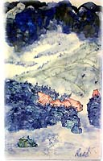

| Art Tiles: Aesthetics of
Pleasure
Article by Philip Read
Art
Tiles are so described as to differentiate the hand-made/hand-painted
tiles from the die cast mass-produced tiles. Tiles have had a long
history of artistic and creative design. Currently, the social perception
of the term ‘tiles’ has relegated the industry to an
inexpensive commodity status indicating a separation from the high
arts. This has not always been the case, the introduction of the
machine produced tiles witnessed the gradual decrease of the hand
as playing a major role in the production or painting of the tiles.
In the 1840’s the ‘dust-pressing’ a method that
consisted of compressing nearly dry clay between two metal dies
revolutionized the tile making industry. Dust pressing replaced
tile-making by hand with wet clay, and facilitated the mechanization
of the tile-making industry.
Today, artisans use the term Art Tiles to identify their tiles
as hand-made, hand-prepared and hand painted. This means that all
tiles are made from wet clay and are individually prepared for painting
by smoothing the surface and edges. The decoration is applied by
hand techniques such as brush, scraffito, luster, tube and transfer
printing.
Historical Context
The history of tiles is truly a global affair. Tiles can be traced
back at least 4000 years into areas of China, Persia, Greece, Egypt,
Mesopotamia (present day Iraq) and Europe through Spain and Italy.
They have been excavated at the pyramids, the ruins of Babylon and
ruins of the ancient Greek cities. Tiles were originally used to
beautify living spaces and were applied on walls and floors. Early
designs exhibited decorations of white and blue stripes and later
exhibited a wider decoration of patterns and colours. A fine white
stoneware with glaze was found from the Shang-Yin Dynasty of China,
1523–1028 BC.
In the 10th and 11th Centuries a process that included a glassy
layer over the clay was developed in Mesopotamia, Persia and Egypt.
Families of potters moved to Spain from the Andalusia hub and Mediterranean
strip of the Iberian Peninsula. This tile method was introduced
to Europe with the Arab invasion of Spain where we still see the
architectonic application of tiles on the greater mosque of Seville
of the 12th century. Incredible architectural examples of Arab building
tiles can still be seen throughout Spain especially at the Alhambra.
Spain and Italy were prime markets for the development of tiles
in Europe specifically in the 14th and 15th centuries. At this time
the hand made production of tiles required an extremely specialized
division of labour that involved tile makers and tile decorators.
Towards the 1500 the cities of Seville and Toledo took over the
production of tiles. These cities developed new techniques for the
making of tiles; they are credited with the appearance of the first
mass production process.
During the 1840’s the tile industry was revolutionized by
the ‘dust pressing’ method that consisted of compressing
nearly dry clay between two metal dies. Subsequently, in the 19th
Century and beginning of the 20th century, the tile industry entered
a pre industrial stage that greatly increased the mechanized production
and volume of tiles.
Prior to the 1840’s, tiles were hand-made, that is to say,
that each tile was hand-formed and hand-painted making each tile
a work of art in its own right. Today, ceramic tile is not hand-made
or hand-painted for the most part. Automated manufacturing techniques
are used and the human had does not enter into the picture until
it is time to install the tile.
The introduction of the term Art Tile in the last 20 years is meant
to promote the individual tile artist who still uses the hand to
make, form and decorate the tiles. This term distinguishes the small
studio tile artist from the mass produced industrial tile and promotes
the return of the labour intensive artistic method of making tiles.
Some tile artists will purchase standard mass produced bisque or
glazed tile and then hand-paint the decoration. Other artists chose
to hand-make, prepare and hand-paint the individual tiles. This
later choice greatly increases the individual tile labour and dramatically
impacts the volume of tiles produced. However, this later method
uniquely individualizes each tile as a work of art, thus the Art
Tile.
Personal Style and Technique
I
chose to work only in ceramic porcelain clay; it is the smoothest
of clay bodies and is excellent for painting. This choice started
for me in 1995 when I went to the ancient city Jingdezhen, China
to study painting and tile making with the many studio artists who
still use the hands to make and decorate tiles. Jingdezhen has been
the center of porcelain clay production for the past 1000years due
to the abundant supply of Kaolin clay which is unique to the production
of the white clay body. I was especially interested in the large
tiles of 20” to 24” which offered a large smooth surface
to paint on. All of my large tiles are hand made and hand prepared.
I do not use a slab roller and maintain the thickness around one
centimeter or 3/8” to ½”. Although this is a
labour intensive process and fragile method I have been able to
develop a success rate above 90% after firing.
The drying process takes up to three weeks and is a critical stage
in the survival of the tile. During this drying period I have developed
a series of coverings to slow down the dry rate that can lead to
cracking and warping. After the tile has dried completely I can
then start the painting process. I only work with Green Ware, no
pre firing bisque because I have found that the dry clay has absorbency
similar to paper. My painting technique is a combination of Eastern
and Western brush applications. These brush techniques often require
a series of dabs rather than a drawing stroke, the difference develops
a layering process that will not smear or create smudge appearances.
Of course, the detail work requires the delicate brush stroke application.
I have found that this combination of dabs and drawing strokes gives
me the maximum freedom of expression over a broad range of composition.
My palette includes cobalt blue, under glaze colours, and glazes
in combinations that enrich the aesthetic beauty of the artwork.
Once the tile painting is complete I apply a clear glaze over
the top and move to the kiln stage. The Kiln stage is a very critical
stage for the success of the large 24” green ware tiles. Moving
the large green ware tiles to the kiln shelves is a very delicate
and cautious stage, they can break very easy.
My firing process involves both vertical and horizontal firings.
I use a gas fired reduction firing and/or an electric oxidation
firing. Typically, I once fire up to 1350’c and then may have
2-4 subsequent firings including vertical firings.
I chose to hand-form, prepare and hand paint all of my porcelain
tiles. As a small studio artisan I can never compete with the large
mass-producing tile companies. Art Tiles currently have a niche
market and serves customers who wish to have a unique one of a kind
artwork to decorate their home.
I
often describe my art making as painting with powdered glass suspended
in water. My painting style is somewhat unorthodox and took me over
5years to develop. It is a brush application technique of dabbing
and layering that results in the glaze melting and fusing into unexpected
and exciting pools of liquid glass. These translucent layers of
glass fuse onto the white porcelain clay and result in images of
soft and strong colour compositions. My paintings are the influence
of Western techniques (watercolours, oil, acrylic painting techniques)
and Eastern techniques (ink and wash paintings on rice paper) combined
with the aesthetics and philosophies of cross culture studies.
Aesthetics of Pleasure
The aesthetics of our personal environment is an important issue
in the emergence and continuing development of Art Tiles. The aesthetics
or beauty of an artwork responds to the individual’s pleasure
principle and an emotion is evoked. An emotional relationship is
formed, a bond of pleasure. Works of art provokes emotion and all
of us react accordingly to specific compositions. However, when
works of art are perceived to be commodity the relationship changes
to one of decorative function the emotion is removed from the observation
and the relationship remains formal.
Craft is often described as the production of a thing having characteristics
that could be shared by other things. This sharing evokes a general
emotion and not a specific emotion as evoked by an individual work
of art like a painting or sculpture. Art Tiles have a limited niche
market primarily due to cost. The Art Tiles are sold as works of
art and are priced accordingly. They are not made to compete directly
with the mass produced tiles but are sold to accent living spaces
surrounded by inexpensive mass produced tiles. As such, someone
will purchase individual tiles because of there beauty and aesthetic
appeal but that is the beauty of Art Tiles; affordable, beautiful,
archival (another loaded word), and durable.
Article courtesy Philip
Read, Mountain Path Studio. ©
Philip Read has an MFA in Studio Art and Critical Theory and a
BA in
Interdisciplinary Arts. He studied Eastern art (Sumi-e, Chinese
Ink and Wash painting) for over 21yrs; and independant studied at
Jingdezhen Ceramic University in Jingdezhen, Jiangxu, South China.
More Articles
|
{kind=link}
{kind=link}
{kind=link}
{kind=link}
{kind=link}
{kind=link}
{kind=link}